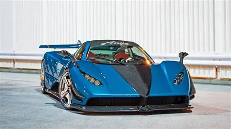
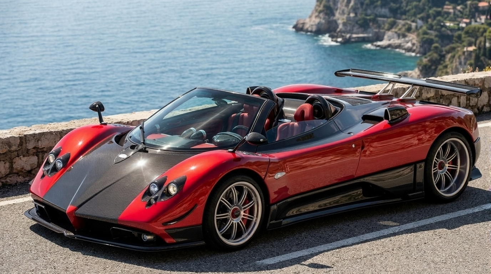
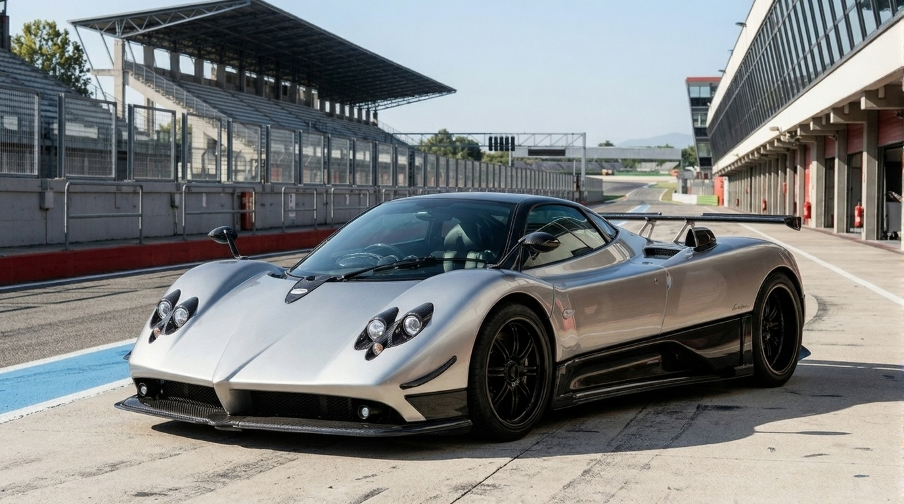
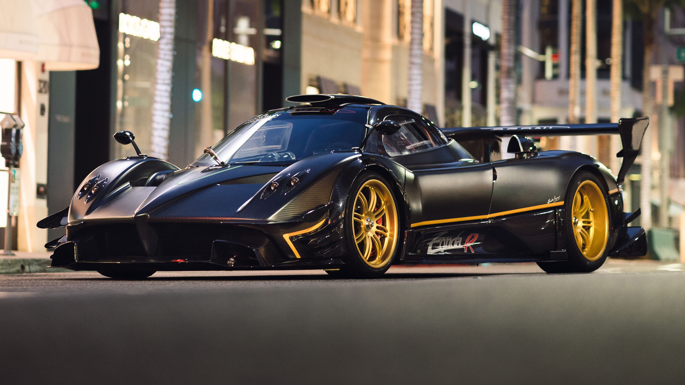
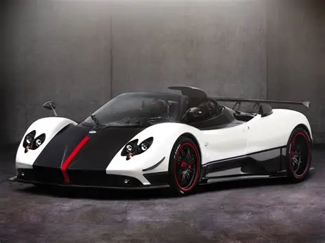
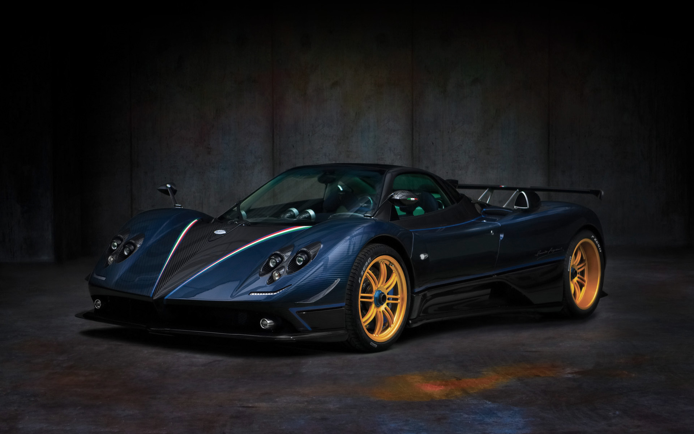
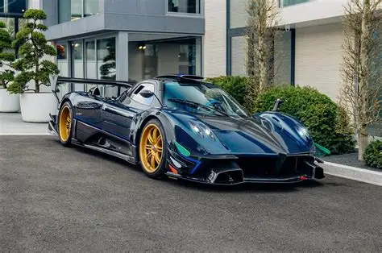
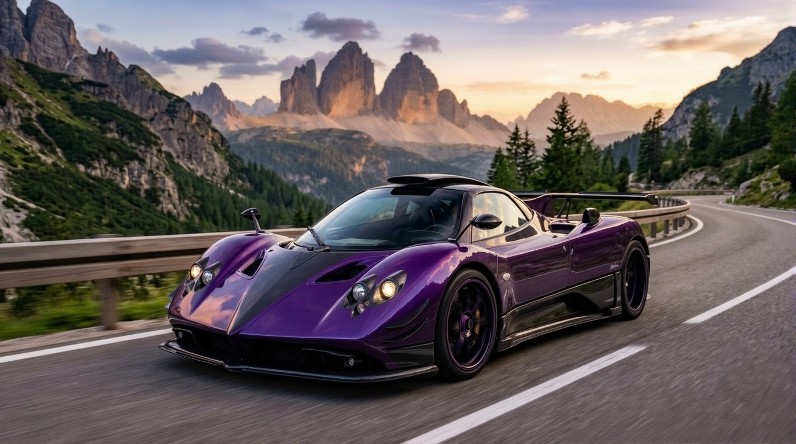
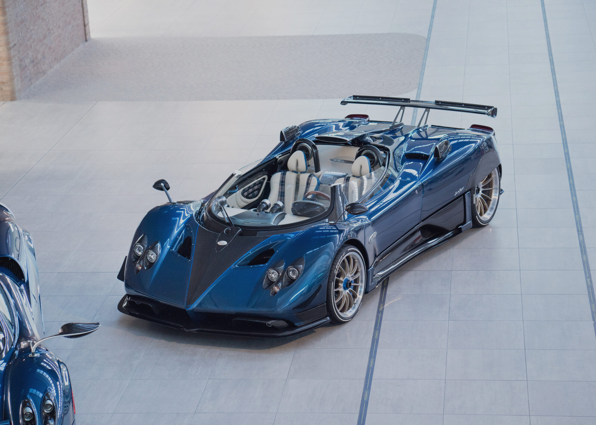

Where the dream began. The radical 1999 debut that shocked the automotive world. Inspired by the silver Le Mans Group C prototypes of the era. A revolutionary carbon fiber monocoque housing a Mercedes-AMG V12. Its design remains a timeless testament to Horacio Pagani's vision. The start of a legacy that redefined the concept of a "Supercar." This is the original DNA of every Pagani that followed.

A masterpiece of carbon-fiber engineering. Combining the visceral thrill of open-top driving. Engineered with the precision performance of the legendary F series. The specialized roll-bar and chassis reinforcements maintain extreme rigidity. Every intake is optimized to deliver the perfect V12 symphony to the cabin. A unique blend of elegance, wind-in-hair freedom, and raw power. Craftsmanship and aerodynamics working in perfect, open-air harmony.

A heartfelt tribute to F1 legend Juan Manuel Fangio, a mentor to Horacio. Boasting significant aerodynamic upgrades and a bare-carbon body option. One of the first production cars to truly master the art of carbon weave. The interior is a gallery of hand-stitched leather and polished aluminum. A mechanical soul that celebrates the golden age of racing history. It remains one of the most balanced and beloved Zondas ever produced.

An unleashed, track-only beast. Completely re-engineered from the ground up. Built to conquer the Nürburgring without compromise or restriction. Only 10% of its components are shared with the road-going Zonda. A high-revving, dry-sump V12 provides a soundtrack unlike any other. Massive downforce and a sequential gearbox define its racing pedigree. The ultimate expression of what Pagani can achieve when rules are removed.

A street-legal hypercar infused with pure Zonda R racing DNA. Limited to just five coupes, introducing Carbo-Titanium to the world. The iconic roof scoop provides the V12 with a constant flow of oxygen. Specialized aerodynamics ensure stability at speeds exceeding 350 km/h. A striking livery that has become an icon in automotive history. The perfect bridge between the race track and the open road.

Built to celebrate the 50th anniversary of the Frecce Tricolori. Featuring exclusive blue carbon weave and aviation-inspired details. The iconic Pitot tube on the hood measures air speed like a fighter jet. Each unit is a tribute to the excellence of the Italian Air Force. One of the rarest and most visually striking Zondas in existence. A masterpiece where Italian patriotism meets extreme engineering.

The absolute apex of the Zonda R track program, a final evolution. Featuring an F1-inspired DRS system and mind-bending downforce. A naturally aspirated V12 pushed to its absolute mechanical limits. Every gram of weight has been scrutinized to ensure maximum agility. This is the fastest, most advanced Zonda ever to touch a circuit. A revolution in performance that remains unmatched in its ferocity.

A series of highly personalized, bespoke commissions for the elite. Blending aggressive aerodynamics with a roaring naturally aspirated V12. Features the signature central fin and roof scoop for maximum intake. Often requested with a manual gearbox to provide the ultimate connection. Each car is a unique reflection of its owner's specific personality. The ultimate realization of the "One-of-One" Pagani philosophy.

Horacio Pagani's personal vision of the ultimate Zonda experience. A stunning, roofless masterpiece crafted for the pure joy of driving. The chopped windshield and rear-wheel covers create a unique silhouette. The most powerful road-going Zonda ever to leave the San Cesario factory. A fusion of 1950s racing style and 21st-century material science. It represents the final, perfect word in the Zonda's long history.